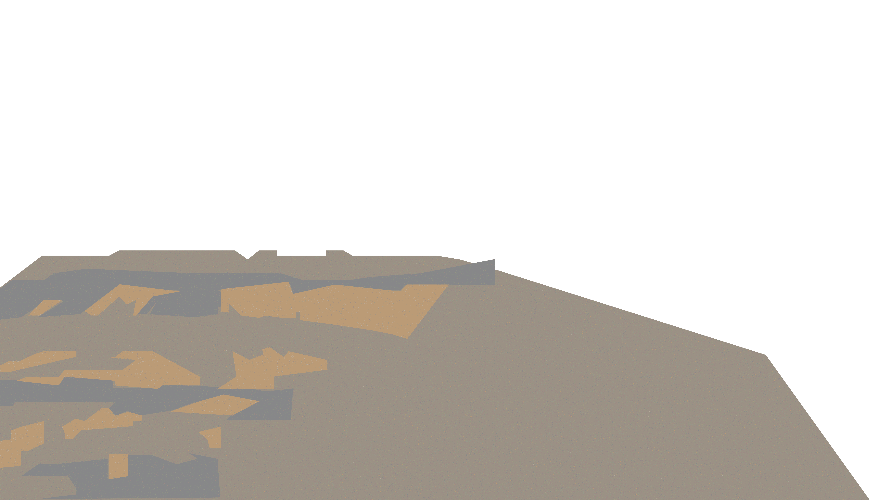
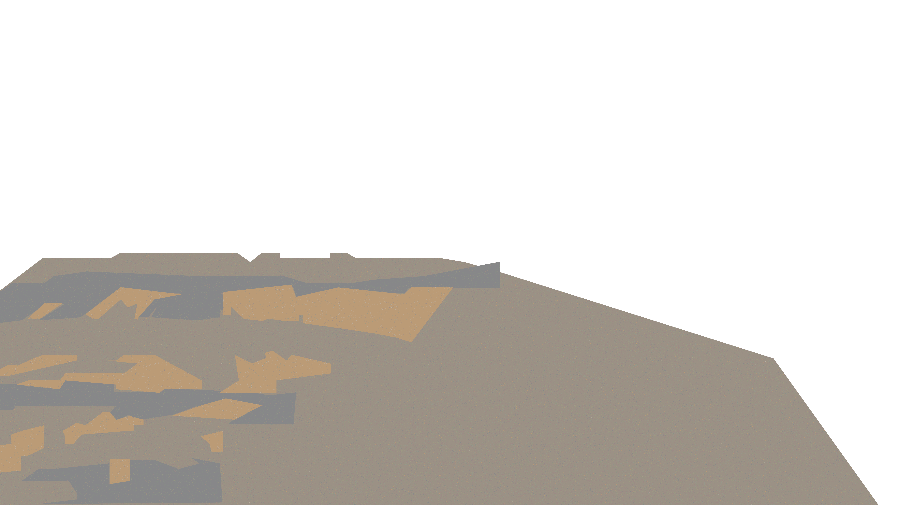
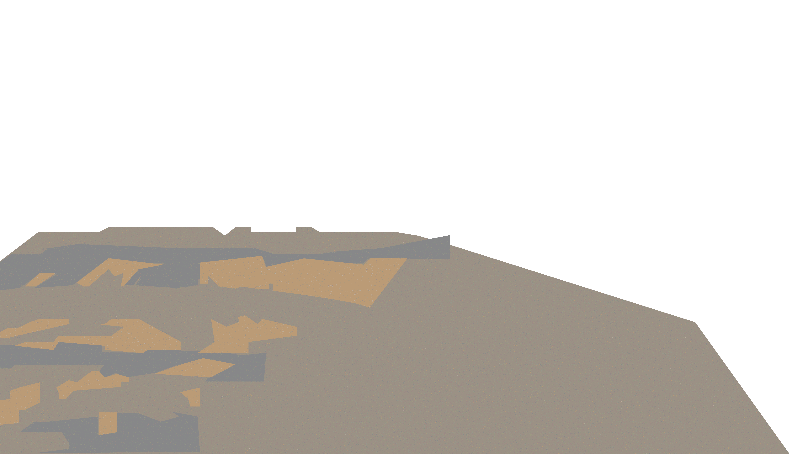

Jesus Heals the Blind Man
Jesus came into the story. Everything changed. This is a story about who Jesus is- God who comes to us.

Jesus came into the story. Everything changed. This is a story about who Jesus is- God who comes to us.